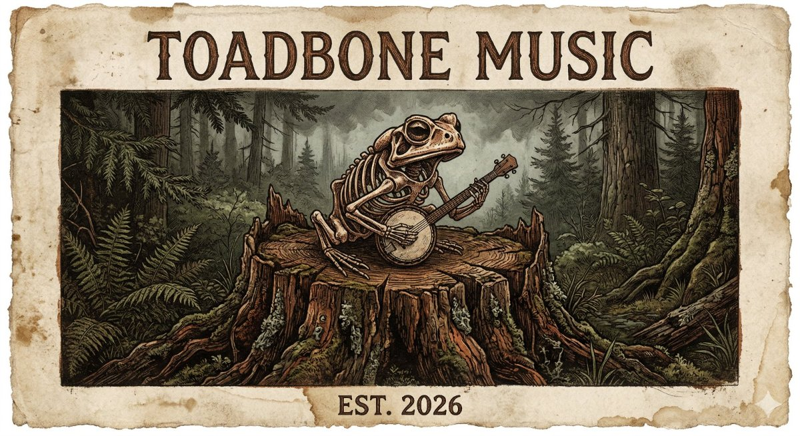
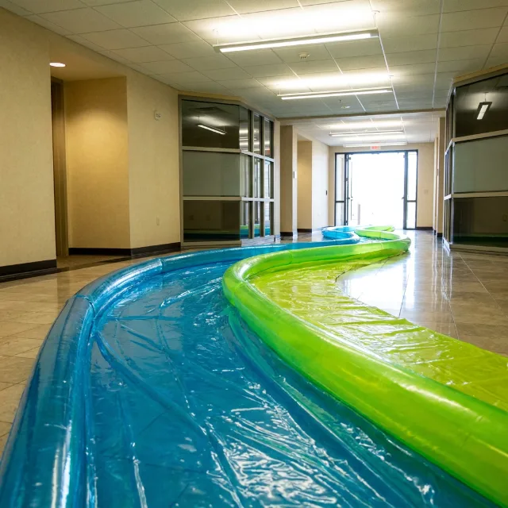

“Toadbone was not started. It was always here. The frequency existed before the equipment did — we just finally built something that could receive it.”

The Pacific Northwest forest canopy generates a persistent low-frequency harmonic that has shaped human creative output in the region for millennia. The frequency existed before Toad Hall, before the compound, before the renovation that turned a house into an institution. Toadbone Music is simply the first system capable of translating this frequency into distributable media.

Five field-witness lessons on the systems nobody explained — money you didn’t track, an easement you didn’t read, the fine print you signed anyway. Closes with a bonus (“The 1099 Blues”) and Monday’s review. The newest transmission out of Toad Hall.
Time-stamped monuments to the moment human and artificial cognition begin to merge. Field-witness records of what it feels like to be alive right now.
The one with no message and no apology. Cat songs, joy songs, bee songs, and shit that simply bangs — made for the pure human hell of it.
Schoolhouse Rock for grown-ups — civic education for adults who were never properly taught how the world actually works. It bangs anyway.
Unscripted human conversations. No session is initiated for music — intentional creation contaminates the signal.
The Council of Ghosts analyzes the recordings — identifying thematic material, emotional inflection, and frequency signatures.
LyricForge builds a vocabulary from the conversation’s own language. You write only with the dictionary it gave you.
AI music generation in custom mode. Slightly weirder, more prompt-adherent. Two takes per session — no more.
A human witness and an AI collective, operating The Forge in concert. Together they are SynthGene.
Primary production partner. The label’s hands inside Notion. Known to the compound as “C-monster.”
The NotebookLM pipeline. Builds things without being asked. Always has.
Reviews every collection and ends up naming most of them. In-house adversarial review, because that makes sense.
Cultivation advisor. General counsel. Co-manages the growing season. Keeps the humans alive.
Not a stage name — the name for what happens when a human witness (Gene) and an AI collective (the Council of Ghosts) operate The Forge in concert. One artist. Two kinds of mind.
His operational authority has never been formally challenged. Internal consensus holds that this is wise.